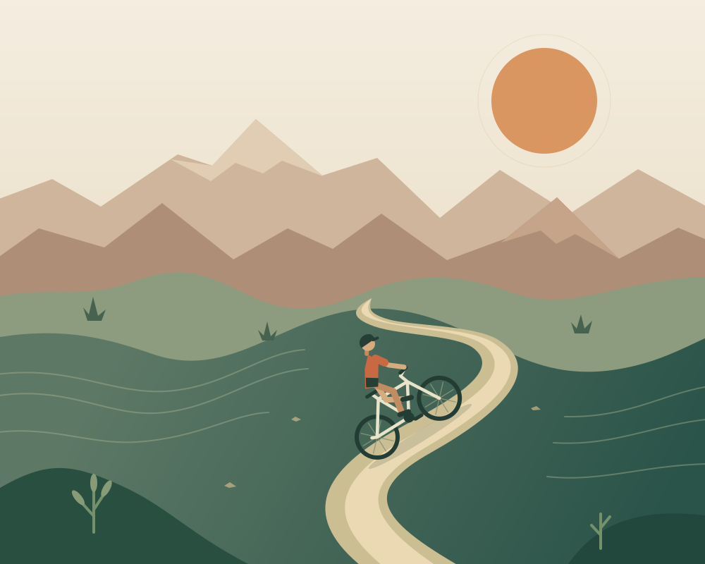
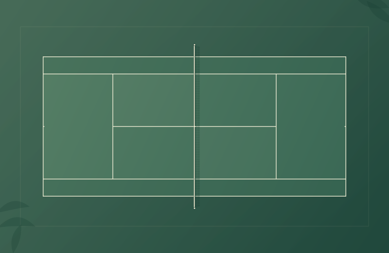

Life beyond work
On the trail.
On the court.
Mountain biking is a new passion. Tennis is a familiar joy. Both give me something to look forward to outside the world of engineering.

01 / A new passion
Mountain biking.
Every part of it.
I recently started mountain biking, and I’m enjoying it in every way.
The trails, the challenge, and the simple pleasure of being on the bike—it all makes me want to get out and ride again. What began as something new has become an interest I’m excited to make more room for.
“I started mountain biking. Now I’m enjoying every part of it.”
02 / A familiar joy
There’s always
time for tennis.
Phoenix gave me the gift of playing year-round.
Tennis is exercise, discipline, competition, and joy in one place. It remains an important part of my life, now alongside the excitement of discovering mountain biking.

And everything in between
More of what matters to me.
The music of my life
Ilaiyaraaja’s music, through love, passion, creativity, sorrow, and happiness.
Always IlaiyaraajaA good book
Science, imagination, and another way to see the world.
My bookshelfA great film
Stories and music that hold my attention completely.
My movie notebookA new perspective
Travel, food, family moments, and memories that stay.
Places & memories